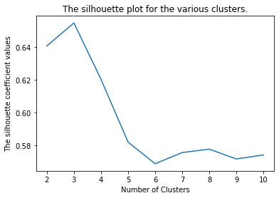
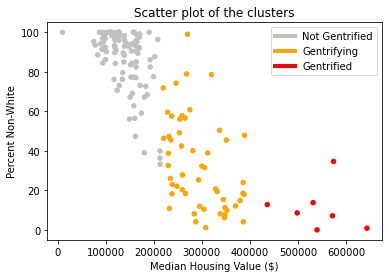
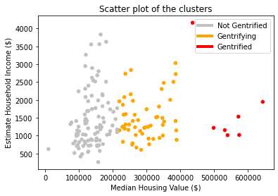
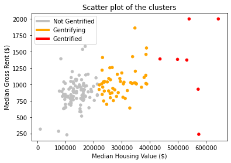
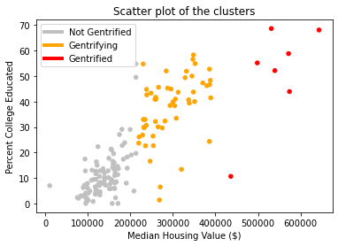

New Orleans is a city susceptible to demographic changes of displacement, often called gentrification. We set
out to
apply machine learning algorithms to census data of the Orleans Parish from 2010 and 2019 to generate a quantitative
definition of gentrification in the Orleans Parish, which works alongside existing qualitative research on the issue
in Orleans Parish.
Our project seeks to apply techniques used by David Knorr in his paper Using Machine Learning to Identify and
Predict Gentrification in Nashville, Tennessee in New Orleans. Knorr uses census data to train a Random Forest
algorithms to define gentrification in Nashville. We found this approach used to define and analyze the definition
of gentrification in cities throughout the world, and we wanted to apply it the city of New Orleans so that we can
arrive at a better definition for gentrification than that previously seen in displacement studies which can be
useful for further studies of the city and its inhabitants. In the end we were able to highlight gentrification in
Orleans Parish neighborhoods and create visualizations which communicate the change within the neighborhoods’
demographics.
We were interested in this topic as we found various papers with this approach to study gentrification being
applied
throughout the world but did not find it used in New Orleans. This approach is about customizing the description of
gentrification for every location it is used, so we believe its application in New Orleans is novel enough. In the
development of the capstone we found the involvement of data collection, generating visualizations and GIS made it
an overall satisfying and sophisticated problem. Having so many resources to consult on how to carry forward with
each part of the process did help in staying organized and allowed us to complete the project without any major
setback or need to rethink the project.
We are mainly referencing Knorr’s “Using Machine Learning to Identify and Predict Gentrification in Nashville,
Tennessee.” , Rheades’ “Understanding urban gentrification through machine learning” , Alejandro’s “Gentrification
Prediction Using Machine Learning” , Royall’s “Towards an epidemiology of gentrification : modeling urban change as
a probabilistic process using k-means clustering and Markov models” , and Liu’s “A comparison of the approaches for
gentrification identification” .
All these studies use census data from two distinct years to look at variables in a range of categories that
relate
to gentrification (race, wealth, education, etc…).David Knorr, looking at gentrification in Nashville, used “
demographic, housing, occupational, transportation, and amenity data from 2000 to train a model on baseline
characteristics that may help distinguish gentrification apart from other types of neighborhood change. [...] The RF
model is projected onto 2016 data to identify potentially vulnerable areas of future gentrification based on their
starting characteristics” (Knorr 1). In Rheades’ paper they built a model “on the characteristics of LSOAs (British
equivalent to U.S. census tracts) from the 2001 Census to ‘predict’ the 2011 scores, and then use the same model
with the 2011 Census data to predict outcomes in 2021” (Rheades 931) in the London area.
The issue of defining gentrification is non-trivial. We looked at definitions of gentrification such as that
by
Ellen and O’Reagan, who in studying low-income neighborhood change defined a tract or neighborhood as “eligible” (at
risk of gentrification) if less than 70% of metropolitan income in the start year and as gentrified if 10%+ increase
in ratio of tract to metro average household income over 10 years. By this measure, exactly zero tracts in Orleans
Parish are gentrified. Thus it was clear that creating a universal definition for gentrification based on just a
couple of variables is an impossible problem.
We collected all of our data from the U.S. Census’s American Community Survey 5-year average. The reader may
be more
familiar with the Decennial Census, but the American Community Survey (ACS) is different from the Decennial Census
as the ACS is carried out every year, is given out to a sample of addresses instead of every household, and asks
about topics not in the decennial census, such as education, employment, and internet access. The ACS, alongside
their yearly estimates, publish their 5-year estimates, which represent data collected between the 5 years previous
to the publication, such that the 2010 ACS 5-year estimate considers data from 2006 to 2010. The 5-year averages are
advantageous for our study of Orleans Parish due to its smaller population size when compared to cities like
Nashville. We are separating the city according to the census tracts, which are the statistical subdivisions of a
county that are smaller than a neighborhood but larger than a block. For a city like Nashville, a tract includes
about 4000 people. Orleans Parish tracts have between 400-4000 residents. We were concerned that 400 residents might
be too small of a sample size for yearly ACS estimates to remain accurate, so we decided to use 5-year estimates for
2010 and 2019. Our data thus consists of different variables measured by the ACS for each of the 177 tracts of
Orleans Parish. These variables are related to demographic indicators of gentrification such as wealth, race,
education, and transportation. We used a set of variables (Table 1) to divide the tracts into groups and label one
as gentrified, and another set of variables (Table 2) to provide the Random Forest algorithm metrics with which to
label gentrification with the 2019 data. These variable selections were guided from those used by Knorr, and limited
by what was available from the census for Orleans Parish; percent of public transit users, and percent of people
with a commute longer than 20 minutes were census variables not available for Orleans Parish tracts, for
example.
The data was collected with help of the census python wrapper by DataMade
(https://github.com/datamade/census). We
were forced to exclude 17 tracts (Figure 1) from the final analysis since, due to low population or under-reporting,
the values for some variables would be either 0 or not available which would disturb our analysis. These tracts were
mostly from the area of New Orleans East, but also include a couple in Mid-City and the Lower Ninth Ward, as well as
non-residential areas such as City Park and Pontchartrain Lake.
Since we are conducting supervised machine learning with 2019 census data to classify certain tracts as “gentrified” we need to define 2010 tracts and create the labels we will use, such that we have initial data with which to train our machine learning algorithms. Rather than manually picking which tracts are gentrified, we ran a k-clustering algorithm on 6 attributes (Table 1) from the data available for 2010. The clustering algorithm separates the tracts into k groups, organizing the tracts by minimizing the euclidean distance between the tracts in each group. To choose how many clusters to divide the tracts into we used the silhouette analysis tools available in the sklearn library (Figure 2) to evaluate the optimal number of clusters. We selected to separate separate the tracts into 3 groups, as we felt separating them into binary groups would fail in capturing the complexities of the issues of gentrification, and as we created more clusters, they would just subdivide the larger and more compact clusters into smaller ones.The silhouette coefficients (Figure 1) confirm this decision, as the value peaks for three clusters. This also agrees with the decisions taken by the other papers using this approach, where one cluster is labeled “gentrified”, another as “not gentrified”, and the cluster between them, which displays some characteristics of the “gentrified” cluster, is left as “gentrifying”. These will be the terms we will use to describe our three clusters from now on. To select the “gentrified” cluster we just selected the cluster with the highest median housing value. We found that median housing value had the largest correlation to the other variables (Table 3) and in the scatterplots we generated (Figure 3) it showed that there is almost no overlap between the housing value of tracts in different clusters. We thus selected the small cluster of 7 tracts (Orange dots in Figure 4). The other two tracts were separated between “gentrifying” and “not gentrified”.
    
Since our objective is a classifying problem, labeling the tracts between “gentrified”, “gentrifying” and
“not-gentrified”, we can apply a random forest algorithm, which is a logic tree in which at each node we allow the
algorithm to split the data into further dissimilar groups, until a final state is reached. Random Forest has the
advantage of being able to include many more variables (Table 2)when compared to clustering, which needs small data
dimensionality. We wanted to include more variables such as eviction rate, housing stock age, percent blue collar
workers, percent park coverage, and distance to downtown, but these are not available through the U.S. Census data.
We are also interested in a definition of gentrification that is distanced from direct human intervention, as this
means a definition of gentrification that can be personalized and equally representative for every city.
The process for creating the random forest classifier is shown in Figure 5. First the algorithm is trained on
a
subset of the 2010 data set, so that 70% of the tracts are used for training, and the remaining 30% are used to test
the algorithm and see how accurately it can classify them based on our expected labels. Once we can verify its
accuracy, the 2019 data can be run through the algorithm, and it will output a label for each tract (Figure 6),
based on whether it is “gentrified”, “gentrifying”, or “not gentrified”.


Our predictions were mostly expected, though certain tracts, such as those deemed gentrified in New Orleans
East
and deep in the West Bank were surprising to us. Beyond the literal spread of gentrified tracts, there are many
caveats to our findings that support the use of the machine learning approach to gentrification. Following in the
tradition of Knorr’s paper, we will compare our definition of gentrification to two more traditional criteria for
gentrification which are both still prevalent today.
Firstly, and most shockingly, we will compare our approach to Ellen and Ding’s approach. They posit that, if a
tract’s college educated population has a percent change of greater than 50% it is gentrified. By this definition
exactly zero tracts have gentrified between 2010 and 2019. This surely isn’t the case, and leads one to believe that
Ellen and Ding have too much faith in the college educated. However, when we ran a correlation matrix on our dataset
with our predictions and features, we found that percent college educated was the feature with the strongest
correlation to that tract’s cluster -- even stronger than median housing value or rent! However, in Orleans Parish
specifically, the percent change of college educated population from 2010 to 2019 is more around 9-10%. This
highlights the importance of training and fitting models to derive a definition of gentrification. While a 50%
change of the college educated population may be the norm in whatever city Ellen and Ding were investigating, it
simply does not ring true for all other cities. As made evident by our correlation matrix, the K-Clustering and RF
algorithms gave quite some merit to college educated population changes. It also, however, created a definition
based on its understanding of Orleans Parish’s unique demographics and trends in population displacement.
By Ellen and O’Regan’s criteria, a tract is eligible if it’s average income is 70% or less of the average
metropolitan income in the starting year, and a tract is gentrified if there is a 10% or greater increase in the
ratio of tract to average metro income by the end year. By this measure, the majority of gentrified tracts are in
New Orleans east. Interestingly, in reference to the same correlation matrix mentioned earlier, estimated household
income has the weakest correlation with gentrification clustering. Perhaps in cities with growing industries Ellen
and O’Regan’s criteria ring true, but not so much for Orleans Parish in the 2010s. Again, no single criteria will
map accurately to all cities. By applying machine learning to defining gentrification, we can attain a bespoke and
dynamic definition of gentrification specific to an area’s trends and demographics.
We were interested in applying a known process to Orleans Parish as we feel it is a City particularly
susceptible within the US to displacement, and which has been excluded from most studies in this area. In isolation
this work does not contribute to solving the issue of displacement in New Orleans, but we hope to encourage
discourse of the issue as a serious threat to the population and identity of the city.
While we only used data available through the US census American Community survey, the same machine learning
approach can be extended to analyze other factors of gentrification in Orleans Parish. Tract level elevation data,
for instance, could help us gauge the way natural disasters play into the New Orleanian homebuying mindset. We even
found articles studying the correlation between tourism and displacement in New Orleans. If data from Airbnb and
other services could be gathered for 2010 and 2019 and added as an attribute, the link between short term rentals
and displacement in Orleans Parish could be studied and quantified through this approach.
We hope that our capstone further confirms the project put forth by Knorr. “Gentrification” is a word that
gets thrown around a lot these days and it has very real impacts on people’s lives. Sadly, even paradoxically, it
has been a challenge to economists over the years to determine a ground truth for what makes an area gentrified. So
far as we can see, machine learning approaches such as ours and Knorr’s might provide the closest estimate for a
region-specific definition of the phenomena. In the age of Blackstone and Zillow buying up ample amounts of housing
nationwide, it is essential that prospective homeowners have a clearer sense of the trends and demographic changes
that impact housing values in their city.
Knorr, David Christopher. “Using Machine Learning to Identify and Predict Gentrification in Nashville,
Tennessee.”
N.p., 2019. Print.
Ding, Lei & Hwang, Jackelyn & Divringi, Eileen. (2015). Gentrification and Residential Mobility in
Philadelphia.
Alejandro, Yesenia & Palafox, Leon. (2019). Gentrification Prediction Using Machine Learning.
10.1007/978-3-030-33749-0_16.
Royall, Emily. (2016). Towards an epidemiology of gentrification : modeling urban change as a probabilistic
process
using k-means clustering and Markov models.
Reades, Jon & Souza, Jordan & Hubbard, Phil. (2018). Understanding urban gentrification through machine learning.
Urban Studies. 004209801878905. 10.1177/0042098018789054.
Royall, Emily. (2016). Towards an epidemiology of gentrification : modeling urban change as a probabilistic
process
using k-means clustering and Markov models.
Liu, Cheng & Deng, Yu & Song, Weixuan & Wu, Qiyan & Gong, Jian. (2019). A comparison of the approaches for
gentrification identification. Cities. 95. 102482. 10.1016/j.cities.2019.102482.
Dustin Robertson, Christopher Oliver & Eric Nost (2020) Short-term rentals as digitally-mediated tourism
gentrification: impacts on housing in New Orleans, Tourism Geographies, DOI: 10.1080/14616688.2020.1765011
Renia Ehrenfeucht & Marla Nelson (2020) Just revitalization in shrinking and shrunken cities? Observations on
gentrification from New Orleans and Cincinnati, Journal of Urban Affairs, 42:3, 435-449, DOI:
10.1080/07352166.2018.1527659